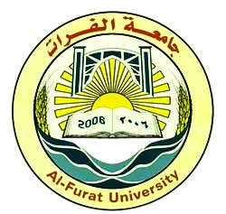
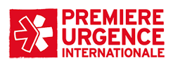
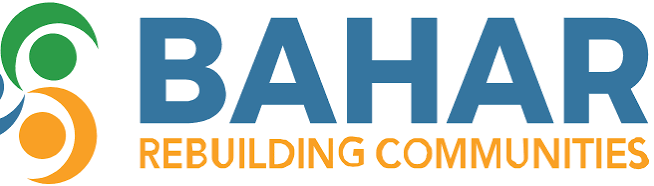
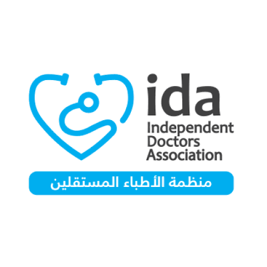
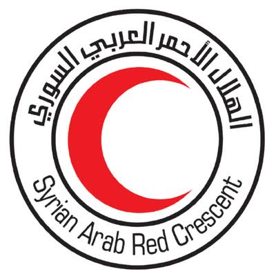
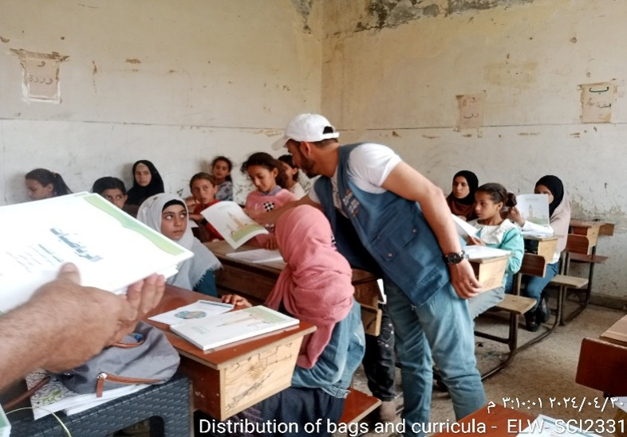

Eng. Housam Aldeen Alhamad
Specialist in Monitoring, Evaluation, Accountability, and Learning (MEAL).
information management, with experience supporting humanitarian programs in the sectors of Water, Sanitation, and Hygiene (WASH).
Food Security and Livelihoods (FSL).
Shelter and infrastructure, protection, education, health, and Early Recovery (ERL).
Data collection and quality assurance, accountability mechanisms, needs assessment, and post-distribution monitoring
His experience includes monitoring program implementation, tracking indicators.
(PDM), focus group discussions (FGDs), key informant interviews (KIIs), and reporting.
Syrian Virtual University (SVU)
Al-Furat University | Graduated December 2021





KoboToolbox, Power BI,HIS Advanced, Kobo Tool box , google form
Microsoft Office Suite (Advanced Excel), Adobe Acrobat, Cloud Databases
Python, HTML, CSS,DAX
Adobe Photoshop, SolidWorks, Automation Studio
Arabic: Native Speaker
English: Professional Working Proficiency
Water & Sanitation
Food Security & Livelihoods
early recovery
Habitat & Infrastructure
Protection & Health
Non-Formal Education / ALP & Remedial
Emergency & Distribution


